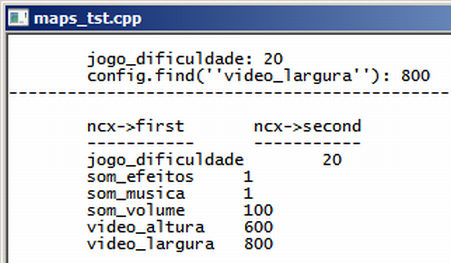

Curso completo de linguagem C++
Gameprog - Escola de programação de jogos digitais
Contato: gameprog.br@gmail.com
track26.html
26. <map>
26.1 Visão geral
A estrutura mapa é implementada pela classe genérica map e é semelhante a um
dicionário de dados aonde dois elementos estão relacionados: cada elemento
do mapa está relacionado com uma chave que lhe dá acesso.
Uma forma de visualizar o mapa é pensar numa agenda telefônica aonde o nome
é a chave de acesso que permite localizar o número.
Abaixo ilustramos o uso da estrutura map simulando uma tela de opções típica
dos videogames aonde o usuário pode configurar características gerais do
jogo como som, dificuldade, resolução da tela, efeitos sonoros etc.

// maps_tst.cpp
// Esse programa ilustra o uso da estrutura map
#include <iostream>
#include <string>
#include <map>
using namespace std;
int main() {
system("color f0"); system("title maps_tst.cpp"); cout << endl;
// Declarando um mapa e seu iterator
map<string, int> config;
map<string, int>::iterator ncx_pos;
// Vamos localizar adiante o valor dessa chave
string spropriedade = "video_largura";
// Inserindo dados em um mapa
config["video_largura"] = 800;
config["video_altura"] = 600;
config["som_efeitos"] = 1;
config["som_musica"] = 1;
config["som_volume"] = 100;
config["jogo_dificuldade"] = 20;
// Acessando e mostrando o valor de uma chave conhecida
cout << "\tjogo_dificuldade: ";
cout << config["jogo_dificuldade"] << endl;
// Localizando a posição de uma chave para exibição de seu valor
ncx_pos = config.find(spropriedade);
cout << "\tconfig.find(''video_largura''): " << ncx_pos->second << endl;
cout << "-------------------------------------------------------------- \n\n";
cout << "\tncx->first \t ncx->second \n";
cout << "\t----------- -----------\n";
// Vamos mostrar todas as chaves e seus valores
for (ncx_pos = config.begin(); ncx_pos != config.end(); ncx_pos++)
cout << "\t" << ncx_pos->first << "\t" << ncx_pos->second << endl;
cout << endl;
system("pause");
} // fim da funcao: main()
Declarando uma estrutura map e seu iterator
#include <map> // Inclua este arquivo para utilizar a estrutura map
map<string, int> config; // Declaração da estrutura map
map<string, int>::iterator ncx_pos; // Declaração de um iterator para esta estrutura
O mapa é um recipiente (container) associativo que relaciona uma chave um valor.
Então a declaração do mapa apresenta dois tipos no argumento dessa forma:
map<Primeiro, Segundo> nome_do_mapa; .Lembre-se que a declaração do iterator
deve seguir os tipos definidos na estrutura conforme ilustrado no código acima.
Colocando dados em uma estrutura map
config["video_largura"] = 800;
config["video_altura"] = 600;
config["som_efeitos"] = 1;
Veja acima que a sintaxe de inserção de dados na estrutura map é bem confortável,
simplesmente você apresenta a chave entre colchetes e assinala um valor a ela.
Acessando dados de uma estrutura map
cout << config["jogo_dificuldade"] << endl;
Simplesmente forneça a chave entre colchetes para obter o valor da mesma ou
você pode utilizar as propriedades .first (refere-se a chave) e .second
(refere-se ao valor da chave)do iterator do objeto map para obter as chaves e
seus valores conforme código mostrado abaixo:
// Vamos mostrar todas as chaves e seus valores
map<string, int>::iterator ncx_pos; // Iterator definido previamente
for (ncx_pos = config.begin(); ncx_pos != config.end(); ncx_pos++)
cout << "\t" << ncx_pos->first << "\t" << ncx_pos->second << endl;
Localizando valores em uma estrutura map
// Localizando a posicao de uma chave para exibicao de seu valor
map<string, int>::iterator ncx_pos; // Iterator definido previamente
ncx_pos = config.find(spropriedade);
cout << "\tconfig.find(''video_largura''): " << ncx_pos->second << endl;
O método .find(chave) localiza a chave especificada e retorna a sua posição
em um iterator. Através desse iterator, você utiliza as propriedades first e
second para acessar respectivamente a chave e seu valor.